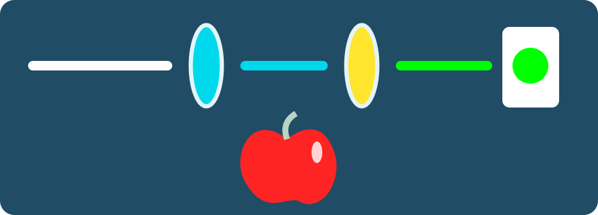

Teste das maçãs
12 perguntas aleatórias, uma de cada vez. Tutorial, interpretação indicativa e um relatório PDF com as tuas respostas.
Abrir atividadeExplora, responde e compreende como a luz interage com os materiais.
Entra na nova atividade ou consulta os recursos complementares.
Versão experimental · Sem recolha de respostas

12 perguntas aleatórias, uma de cada vez. Tutorial, interpretação indicativa e um relatório PDF com as tuas respostas.
Abrir atividadePrevê que luz atravessa dois filtros, altera a ordem e explora os componentes RGB.
Abrir atividadeAs nove perguntas e as regras do instrumento histórico, com apresentação adaptada e referências.
Abrir atividade